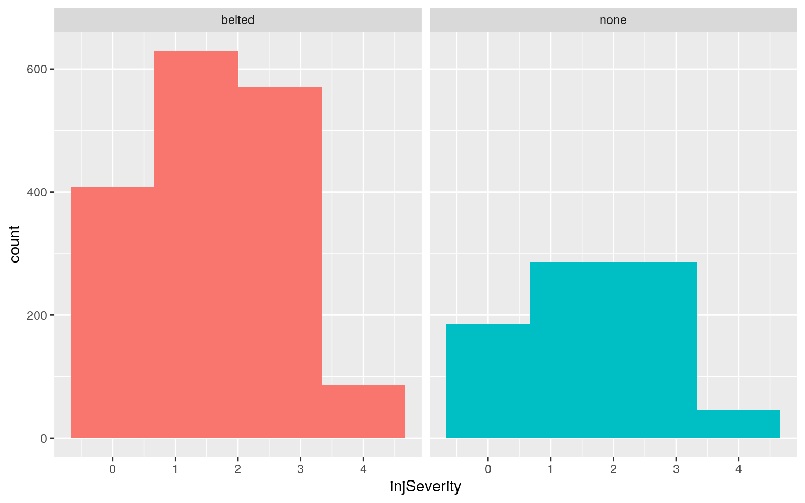
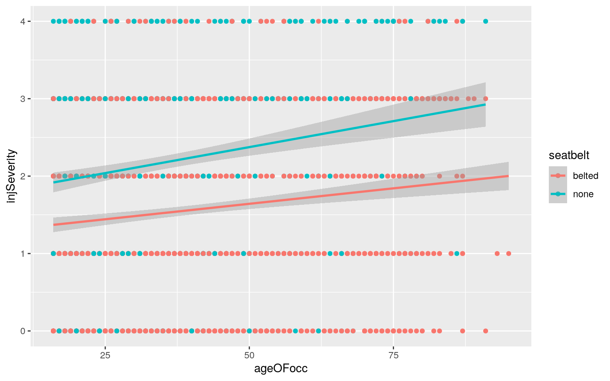
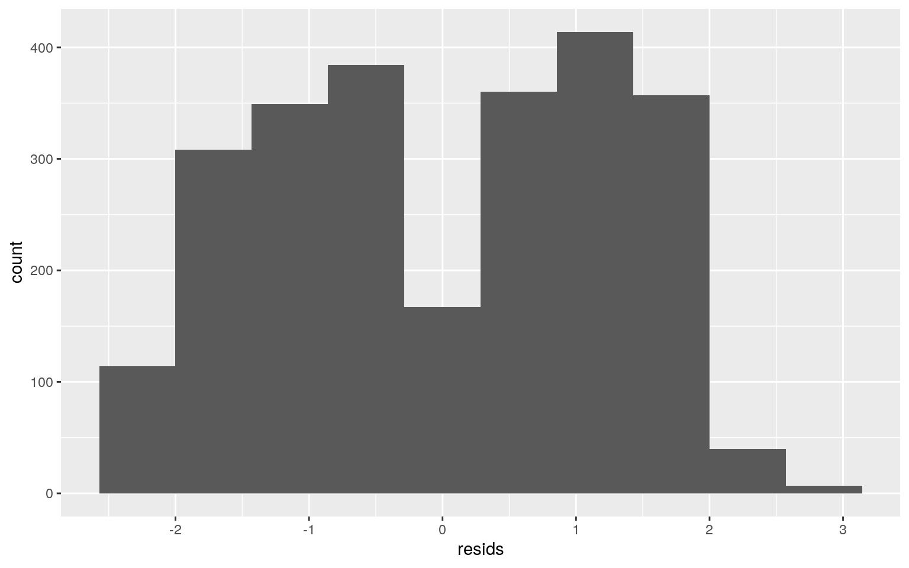
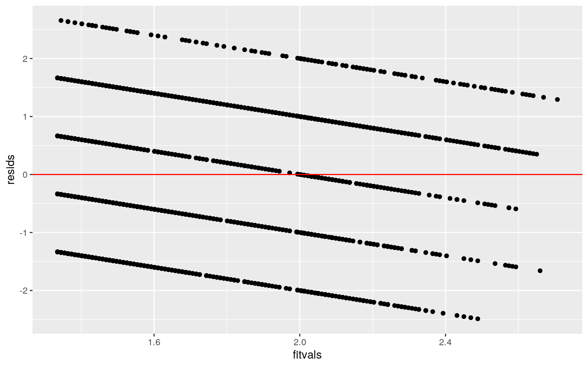
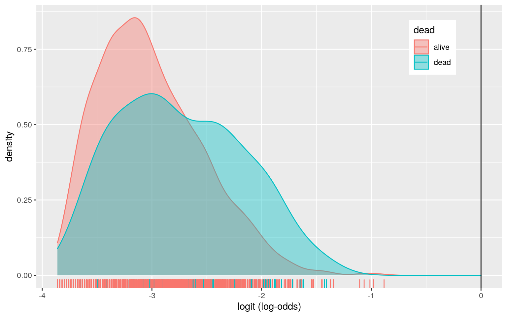
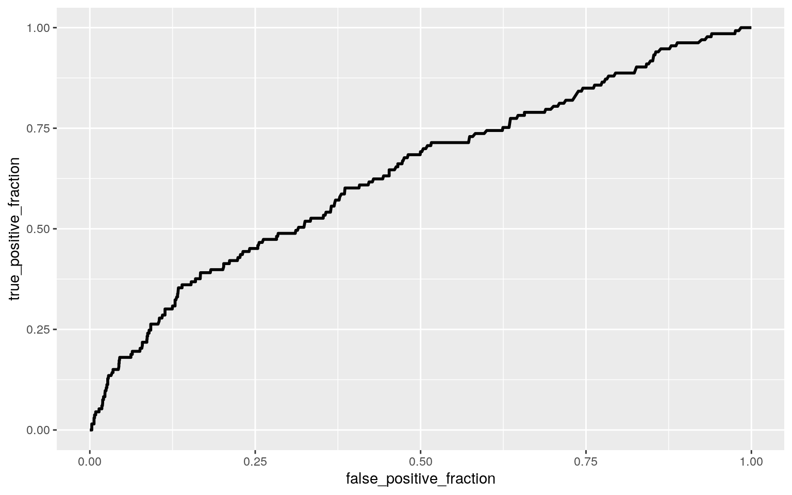

The dataset I’m using contains car accident data, specifically health outcomes, based on aspects of the car accident. In this project, I will be focusing on response variable injSeverity, which is based on a scale of 1-6, where 0:none, 1:possible injury, 2:no incapacity, 3:incapacity, 4:killed, 5:unknown, 6:prior death. Most of the variables in this dataset only have two possible groupings, like whether an airbag deployed or not, whether a seatbelt was used or not, etc. I expect the airbag and seatbelt variables to be most significant on injSeverity, but am interested to see in how the age of the car and it’s occupant affects injSeverity as well.
##MANOVA, ANOVA, t-tests
#wrangling data to exclude "unknown" and "prior death" observations from response variable, creating a variable for the age of the car involved in the accident
library(readxl)
airbagdata <- read_excel("AirbagData.xlsx")
airbagdata<- filter(airbagdata, injSeverity==0| injSeverity==1|injSeverity==2|injSeverity==3|injSeverity==4) %>% na.omit() %>% mutate(carage= yearacc - yearVeh) %>% mutate(injSeverity=as.numeric(injSeverity)) %>% slice(1:2500)
#MANOVA
manova(cbind(carage, ageOFocc)~injSeverity,data=airbagdata) %>% summary()## Df Pillai approx F num Df den Df Pr(>F)
## injSeverity 1 0.01378 17.445 2 2497 2.992e-08 ***
## Residuals 2498
## ---
## Signif. codes: 0 '***' 0.001 '**' 0.01 '*' 0.05 '.' 0.1
' ' 1#ANOVA
summary(aov(carage~injSeverity,data=airbagdata))## Df Sum Sq Mean Sq F value Pr(>F)
## injSeverity 1 57 56.98 2.191 0.139
## Residuals 2498 64957 26.00summary(aov(ageOFocc~injSeverity, data=airbagdata))## Df Sum Sq Mean Sq F value Pr(>F)
## injSeverity 1 11017 11017 31.99 1.72e-08 ***
## Residuals 2498 860245 344
## ---
## Signif. codes: 0 '***' 0.001 '**' 0.01 '*' 0.05 '.' 0.1
' ' 1#T-tests
pairwise.t.test(airbagdata$carage, airbagdata$injSeverity, p.adj="none")##
## Pairwise comparisons using t tests with pooled SD
##
## data: airbagdata$carage and airbagdata$injSeverity
##
## 0 1 2 3
## 1 0.15445 - - -
## 2 0.58936 0.46386 - -
## 3 0.62629 0.28555 0.87724 -
## 4 0.00131 5e-05 0.00065 0.00034
##
## P value adjustment method: nonepairwise.t.test(airbagdata$ageOFocc, airbagdata$injSeverity, p.adj="none")##
## Pairwise comparisons using t tests with pooled SD
##
## data: airbagdata$ageOFocc and airbagdata$injSeverity
##
## 0 1 2 3
## 1 0.00383 - - -
## 2 0.03942 0.58635 - -
## 3 9.7e-06 0.24187 0.10253 -
## 4 2.3e-09 3.3e-05 1.4e-05 0.00029
##
## P value adjustment method: none#Type-1 Error
1-(0.95)^23## [1] 0.6926431#Bonferroni
0.05/23## [1] 0.002173913##Randomization
##HO: wearing seatbelt has no effect on inJseverity
##H1: wearing seatbelt affects injSeverity
##mean difference in severity between seatbelt and no seatbelt
airbagdata%>%group_by(seatbelt)%>%summarize(means=mean(injSeverity, na.rm=T)) %>% summarize('meandiff'=diff(means))## # A tibble: 1 x 1
## meandiff
## <dbl>
## 1 0.619randomdist<- vector()
for(i in 1:5000){
new<- data.frame(injSeverity=sample(airbagdata$injSeverity), seatbelt=airbagdata$seatbelt)
randomdist[i]<- mean(new[new$seatbelt=='belted',]$injSeverity)-mean(new[new$seatbelt=='none',]$injSeverity)
}
mean(randomdist > 0.5836575|randomdist < -0.5836575)## [1] 0ggplot(new,aes(injSeverity,fill=seatbelt))+geom_histogram(bins=4)+
facet_wrap(~seatbelt,ncol=2)+theme(legend.position="none")
##Linear Regression Model
library(sandwich)
library(lmtest)
##finding coefficients to use in regression
fit<- lm(injSeverity ~ ageOFocc + seatbelt, data=airbagdata)
summary(fit) ##controlling for age of the occupant, wearing a seatbelt is still significant in predicting injSeverity ##
## Call:
## lm(formula = injSeverity ~ ageOFocc + seatbelt, data =
airbagdata)
##
## Residuals:
## Min 1Q Median 3Q Max
## -2.4884 -1.2412 -0.0225 1.0659 2.6555
##
## Coefficients:
## Estimate Std. Error t value Pr(>|t|)
## (Intercept) 1.182851 0.061087 19.363 < 2e-16 ***
## ageOFocc 0.009509 0.001342 7.087 1.78e-12 ***
## seatbeltnone 0.658972 0.053631 12.287 < 2e-16 ***
## ---
## Signif. codes: 0 '***' 0.001 '**' 0.01 '*' 0.05 '.' 0.1
' ' 1
##
## Residual standard error: 1.246 on 2497 degrees of
freedom
## Multiple R-squared: 0.06894, Adjusted R-squared: 0.06819
## F-statistic: 92.44 on 2 and 2497 DF, p-value: < 2.2e-16#regression: injSeverity= 1.103455 + 0.010470(ageOFocc) +0.630720(seatbelt)
ggplot(airbagdata, aes(y=injSeverity, x=ageOFocc, color=seatbelt)) + geom_point(aes(color=seatbelt)) + geom_smooth(method="lm")
##checking assumptions of linearity, normality, and homoskedasticity
bptest(fit)##
## studentized Breusch-Pagan test
##
## data: fit
## BP = 1.8669, df = 2, p-value = 0.3932resids<-lm(injSeverity ~ ageOFocc + seatbelt, data=airbagdata)$residuals
ggplot()+geom_histogram(aes(resids),bins=10)
fitted<-lm(injSeverity ~ ageOFocc + seatbelt, data=airbagdata)$fitted.values
fitvals<-fit$fitted.values
ggplot()+geom_point(aes(fitvals,resids))+geom_hline(yintercept=0, color='red')
##recomputing with robust standard errors
coeftest(fit, vcov=vcovHC(fit))[,1:2]## Estimate Std. Error
## (Intercept) 1.182850667 0.060183909
## ageOFocc 0.009509179 0.001311994
## seatbeltnone 0.658971712 0.053213564Null1: Controlling for seatbelt, the age of the occupant is not significant in predicting injSeverity. Null2: Controlling for age of the occupant, wearing a seatbelt is not significiant in predicting injSeverity. The p-value for ageOFocc, controlling for seatbelt is 8.08e-10, so it is significant, we reject the second null hypothesis.The p-value for seatbelt, controlling for ageOFocc is 2e-16, so it is signficant, and we also reject the first null hypothesis. Using the calculated coefficients, injSeverity can be predicted by injSeverity= 1.103455 + 0.010470(ageOFocc) +0.630720(seatbelt). Using the adjusted r squared value, 6.899% of the variance is explained by the model.The data was homoskedastic, demonstrated by a p-value of 0.9754. Looking at the other figures, the data looks does not look normally distributed, but it does look linear.
##Linear Regression with Bootstrapping
samp_distn<-replicate(5000, { boot_dat<-boot_dat<-airbagdata[sample(nrow(airbagdata), replace=TRUE),]
fit2<- glm(injSeverity ~ ageOFocc + seatbelt, data=airbagdata)
coef(fit2)
})
samp_distn%>%t%>%as.data.frame%>%gather%>%group_by(key)%>% summarize(lower=quantile(value,.025, na.rm = TRUE), upper=quantile(value,.975, na.rm = TRUE))## # A tibble: 3 x 3
## key lower upper
## <chr> <dbl> <dbl>
## 1 (Intercept) 1.18 1.18
## 2 ageOFocc 0.00951 0.00951
## 3 seatbeltnone 0.659 0.659Running the same linear regression with bootstrapped standard errors did not change the intercept or the coefficients for ageOFocc or seatbelt, which further demonstrates that the assumptions for the linear regression above were met.
##Logistic Regression predicting binary variable from 2 explanatory variables
##Calculating coefficients
airbagdata<- airbagdata %>% mutate(deadbi=ifelse(dead=="dead", 1, 0))
fit<-glm(deadbi~carage+ageOFocc, data=airbagdata, family='binomial')
summary(fit)##
## Call:
## glm(formula = deadbi ~ carage + ageOFocc, family =
"binomial",
## data = airbagdata)
##
## Deviance Residuals:
## Min 1Q Median 3Q Max
## -0.8317 -0.3555 -0.2961 -0.2529 2.7500
##
## Coefficients:
## Estimate Std. Error z value Pr(>|z|)
## (Intercept) -4.192561 0.253731 -16.524 < 2e-16 ***
## carage 0.061204 0.015323 3.994 6.49e-05 ***
## ageOFocc 0.020740 0.004331 4.789 1.68e-06 ***
## ---
## Signif. codes: 0 '***' 0.001 '**' 0.01 '*' 0.05 '.' 0.1
' ' 1
##
## (Dispersion parameter for binomial family taken to be 1)
##
## Null deviance: 1039.2 on 2499 degrees of freedom
## Residual deviance: 1004.0 on 2497 degrees of freedom
## AIC: 1010
##
## Number of Fisher Scoring iterations: 6coeftest(fit)##
## z test of coefficients:
##
## Estimate Std. Error z value Pr(>|z|)
## (Intercept) -4.1925605 0.2537310 -16.5236 < 2.2e-16 ***
## carage 0.0612039 0.0153233 3.9942 6.492e-05 ***
## ageOFocc 0.0207395 0.0043308 4.7888 1.678e-06 ***
## ---
## Signif. codes: 0 '***' 0.001 '**' 0.01 '*' 0.05 '.' 0.1
' ' 1exp(coef(fit)) ## (Intercept) carage ageOFocc
## 0.01510755 1.06311566 1.02095606#equation: odds of death = 0.01510755 * 1.06311566^carage * 1.0295606^ageofocc
##confusion matrix
probs<-predict(fit,type="response")
table(predict=as.numeric(probs>.5),truth=airbagdata$deadbi)%>%addmargins## truth
## predict 0 1 Sum
## 0 2367 133 2500
## Sum 2367 133 2500airbagdata$logit <-predict(fit,type="link")
##TPR, TNR, PPV, AUC
2367/2500 #accuracy## [1] 0.94680/133 #sensitivity tpr## [1] 0133/133 #specificity## [1] 1##density plot of logodds
airbagdata%>%ggplot()+geom_density(aes(logit,color=dead,fill=dead), alpha=.4)+
theme(legend.position=c(.85,.85))+geom_vline(xintercept=0)+xlab("logit (log-odds)")+
geom_rug(aes(logit,color=dead))
##Roc
library(plotROC)
roc<- ggplot(airbagdata) +geom_roc(aes(d=dead,m=probs), n.cuts=0)
roc
calc_auc(roc)## PANEL group AUC
## 1 1 -1 0.6381432The intercept is the predicted odds of death when carage and ageOFocc are 0. Every one unit increase in carage multiplies the odds of death by a factor 1.06311566; for every one unit increase in ageOFocc multiplies the odds of death by a factor of 1.0295606. The ROC curve doesn’t tell us much because it plots sensitivity over specificity, and they are 0 and 1, respectively. The area underneath the ROC curve is the model’s AUC, which how represents well the model predicts a that the car accident occupant died or not. In other words, the ROC curve visualizes the tradeoff between sensitivity and specificity.The AUC for this model is 0.6381432 which means it can accurately predict whether the occupant died or not 63.81% of the time, making it a poor predictor!
##Logistic Regression predicting same response from all explanatory variables
airbagdata1<- airbagdata %>% mutate(dead=ifelse(dead=="dead",1,0))
fit<- glm(dead~(.)^2, data=airbagdata1, family="binomial")
coef(fit)## (Intercept) ...1 dvcat25-39
## -2.656578e+01 -2.760802e-09 -9.407506e-06
## dvcat40-54 dvcat44493 dvcat55+
## -2.054425e-06 -1.078190e-05 -3.625151e-05
## weight airbagnone seatbeltnone
## -8.829271e-11 1.564871e-07 -1.533457e-06
## frontal sexm ageOFocc
## 3.110404e-06 -4.981554e-06 -3.112091e-08
## yearacc yearVeh abcatnodeploy
## NA -1.429079e-07 2.617954e-06
## abcatunavail occRolepass deploy
## NA 1.409879e-06 NA
## injSeverity caseid carage
## 4.876087e-07 4.631126e-06 NA
## deadbi logit ...1:dvcat25-39
## 5.313222e+01 NA -7.805170e-13
## ...1:dvcat40-54 ...1:dvcat44493 ...1:dvcat55+
## 3.050222e-11 -1.257981e-11 -1.345216e-10
## ...1:weight ...1:airbagnone ...1:seatbeltnone
## 6.288566e-15 6.302334e-12 -7.090236e-12
## ...1:frontal ...1:sexm ...1:ageOFocc
## 4.326722e-11 -1.265415e-11 8.337265e-13
## ...1:yearacc ...1:yearVeh ...1:abcatnodeploy
## NA 1.359327e-12 2.896510e-11
## ...1:abcatunavail ...1:occRolepass ...1:deploy
## NA -5.320023e-12 NA
## ...1:injSeverity ...1:caseid ...1:carage
## 1.945003e-12 -4.098545e-12 NA
## ...1:deadbi ...1:logit dvcat25-39:weight
## 1.383668e-09 NA 4.230592e-13
## dvcat40-54:weight dvcat44493:weight dvcat55+:weight
## 3.431600e-12 -5.454361e-14 1.967850e-11
## dvcat25-39:airbagnone dvcat40-54:airbagnone
dvcat44493:airbagnone
## 4.331926e-08 -1.559302e-08 4.623594e-08
## dvcat55+:airbagnone dvcat25-39:seatbeltnone
dvcat40-54:seatbeltnone
## 2.391702e-07 -2.075333e-09 4.033024e-08
## dvcat44493:seatbeltnone dvcat55+:seatbeltnone
dvcat25-39:frontal
## 4.651923e-09 -5.831734e-08 2.482328e-08
## dvcat40-54:frontal dvcat44493:frontal dvcat55+:frontal
## -2.375733e-08 2.893923e-08 1.797976e-07
## dvcat25-39:sexm dvcat40-54:sexm dvcat44493:sexm
## 1.853402e-08 -1.792685e-08 5.216583e-10
## dvcat55+:sexm dvcat25-39:ageOFocc dvcat40-54:ageOFocc
## 1.383444e-09 8.843655e-11 -6.946210e-10
## dvcat44493:ageOFocc dvcat55+:ageOFocc dvcat25-39:yearacc
## 3.520742e-10 2.074135e-09 NA
## dvcat40-54:yearacc dvcat44493:yearacc dvcat55+:yearacc
## NA NA NA
## dvcat25-39:yearVeh dvcat40-54:yearVeh dvcat44493:yearVeh
## 4.699254e-09 1.044841e-09 5.389853e-09
## dvcat55+:yearVeh dvcat25-39:abcatnodeploy
dvcat40-54:abcatnodeploy
## 1.812582e-08 1.758889e-08 -5.738772e-08
## dvcat44493:abcatnodeploy dvcat55+:abcatnodeploy
dvcat25-39:abcatunavail
## 1.567555e-08 2.475655e-07 NA
## dvcat40-54:abcatunavail dvcat44493:abcatunavail
dvcat55+:abcatunavail
## NA NA NA
## dvcat25-39:occRolepass dvcat40-54:occRolepass
dvcat44493:occRolepass
## -2.673959e-08 -2.795974e-09 -2.261818e-08
## dvcat55+:occRolepass dvcat25-39:deploy dvcat40-54:deploy
## -2.897394e-07 NA NA
## dvcat44493:deploy dvcat55+:deploy dvcat25-39:injSeverity
## NA NA 6.514400e-09
## dvcat40-54:injSeverity dvcat44493:injSeverity
dvcat55+:injSeverity
## 2.982789e-09 4.676239e-09 -3.675290e-08
## dvcat25-39:caseid dvcat40-54:caseid dvcat44493:caseid
## 8.690432e-09 -4.119228e-09 2.253271e-08
## dvcat55+:caseid dvcat25-39:carage dvcat40-54:carage
## 1.954846e-07 NA NA
## dvcat44493:carage dvcat55+:carage dvcat25-39:deadbi
## NA NA -4.561388e-07
## dvcat40-54:deadbi dvcat44493:deadbi dvcat55+:deadbi
## -4.935548e-07 -3.972840e-07 NA
## dvcat25-39:logit dvcat40-54:logit dvcat44493:logit
## NA NA NA
## dvcat55+:logit weight:airbagnone weight:seatbeltnone
## NA 5.065544e-12 -1.526698e-12
## weight:frontal weight:sexm weight:ageOFocc
## 1.391249e-12 2.670158e-12 -3.179973e-14
## weight:yearacc weight:yearVeh weight:abcatnodeploy
## NA 3.830949e-14 7.326046e-12
## weight:abcatunavail weight:occRolepass weight:deploy
## NA -4.132610e-12 NA
## weight:injSeverity weight:caseid weight:carage
## 1.749373e-12 -4.219881e-12 NA
## weight:deadbi weight:logit airbagnone:seatbeltnone
## -1.362991e-08 NA 2.482138e-08
## airbagnone:frontal airbagnone:sexm airbagnone:ageOFocc
## -4.850113e-09 1.714011e-09 3.055106e-10
## airbagnone:yearacc airbagnone:yearVeh
airbagnone:abcatnodeploy
## NA -1.038711e-10 NA
## airbagnone:abcatunavail airbagnone:occRolepass
airbagnone:deploy
## NA 4.252142e-08 NA
## airbagnone:injSeverity airbagnone:caseid
airbagnone:carage
## -5.378001e-09 -1.764778e-08 NA
## airbagnone:deadbi airbagnone:logit seatbeltnone:frontal
## -5.738720e-07 NA 2.677022e-08
## seatbeltnone:sexm seatbeltnone:ageOFocc
seatbeltnone:yearacc
## -4.382132e-09 3.366159e-10 NA
## seatbeltnone:yearVeh seatbeltnone:abcatnodeploy
seatbeltnone:abcatunavail
## 7.491199e-10 4.143219e-08 NA
## seatbeltnone:occRolepass seatbeltnone:deploy
seatbeltnone:injSeverity
## -2.465105e-08 NA 2.012573e-09
## seatbeltnone:caseid seatbeltnone:carage
seatbeltnone:deadbi
## 3.922151e-09 NA 1.956382e-07
## seatbeltnone:logit frontal:sexm frontal:ageOFocc
## NA 8.771312e-10 -7.648825e-10
## frontal:yearacc frontal:yearVeh frontal:abcatnodeploy
## NA -1.579251e-09 -2.775905e-09
## frontal:abcatunavail frontal:occRolepass frontal:deploy
## NA 5.021709e-08 NA
## frontal:injSeverity frontal:caseid frontal:carage
## 7.024691e-11 -4.199917e-08 NA
## frontal:deadbi frontal:logit sexm:ageOFocc
## -7.678816e-08 NA -3.672678e-10
## sexm:yearacc sexm:yearVeh sexm:abcatnodeploy
## NA 2.509268e-09 -1.646569e-10
## sexm:abcatunavail sexm:occRolepass sexm:deploy
## NA 4.191112e-09 NA
## sexm:injSeverity sexm:caseid sexm:carage
## 3.409656e-09 1.020960e-08 NA
## sexm:deadbi sexm:logit ageOFocc:yearacc
## -2.006442e-07 NA NA
## ageOFocc:yearVeh ageOFocc:abcatnodeploy
ageOFocc:abcatunavail
## 1.522161e-11 -6.790880e-10 NA
## ageOFocc:occRolepass ageOFocc:deploy
ageOFocc:injSeverity
## 1.346068e-09 NA -7.586104e-11
## ageOFocc:caseid ageOFocc:carage ageOFocc:deadbi
## -6.435395e-10 NA -1.645202e-09
## ageOFocc:logit yearacc:yearVeh yearacc:abcatnodeploy
## -2.275451e-10 NA NA
## yearacc:abcatunavail yearacc:occRolepass yearacc:deploy
## NA NA NA
## yearacc:injSeverity yearacc:caseid yearacc:carage
## NA NA NA
## yearacc:deadbi yearacc:logit yearVeh:abcatnodeploy
## NA NA -1.323570e-09
## yearVeh:abcatunavail yearVeh:occRolepass yearVeh:deploy
## NA -7.491521e-10 NA
## yearVeh:injSeverity yearVeh:caseid yearVeh:carage
## -2.456463e-10 -2.295960e-09 -6.944516e-11
## yearVeh:deadbi yearVeh:logit abcatnodeploy:occRolepass
## -4.809725e-08 NA 5.455086e-08
## abcatunavail:occRolepass abcatnodeploy:deploy
abcatunavail:deploy
## NA NA NA
## abcatnodeploy:injSeverity abcatunavail:injSeverity
abcatnodeploy:caseid
## -2.862444e-09 NA -2.809290e-08
## abcatunavail:caseid abcatnodeploy:carage
abcatunavail:carage
## NA NA NA
## abcatnodeploy:deadbi abcatunavail:deadbi
abcatnodeploy:logit
## -1.731025e-08 NA NA
## abcatunavail:logit occRolepass:deploy
occRolepass:injSeverity
## NA NA 6.957789e-09
## occRolepass:caseid occRolepass:carage occRolepass:deadbi
## -2.428845e-09 NA 2.528950e-07
## occRolepass:logit deploy:injSeverity deploy:caseid
## NA NA NA
## deploy:carage deploy:deadbi deploy:logit
## NA NA NA
## injSeverity:caseid injSeverity:carage injSeverity:deadbi
## -4.415181e-09 NA 3.853929e-06
## injSeverity:logit caseid:carage caseid:deadbi
## NA NA -1.514099e-06
## caseid:logit carage:deadbi carage:logit
## NA NA NA
## deadbi:logit
## NAclass_diag<-function(probs,truth){
if(is.numeric(truth)==FALSE & is.logical(truth)==FALSE) truth<-as.numeric(truth)-1
tab<-table(factor(probs>.5,levels=c("FALSE","TRUE")),truth)
prediction<-ifelse(probs>.5,1,0)
acc=mean(truth==prediction)
sens=mean(prediction[truth==1]==1)
spec=mean(prediction[truth==0]==0)
ppv=mean(truth[prediction==1]==1)
f1=2*(sens*ppv)/(sens+ppv)
#CALCULATE EXACT AUC
ord<-order(probs, decreasing=TRUE)
probs <- probs[ord]; truth <- truth[ord]
TPR=cumsum(truth)/max(1,sum(truth))
FPR=cumsum(!truth)/max(1,sum(!truth))
dup<-c(probs[-1]>=probs[-length(probs)], FALSE)
TPR<-c(0,TPR[!dup],1); FPR<-c(0,FPR[!dup],1)
n <- length(TPR)
auc<- sum( ((TPR[-1]+TPR[-n])/2) * (FPR[-1]-FPR[-n]) )
data.frame(acc,sens,spec,ppv,auc)
}
# 10 fold CV
set.seed(1234)
k = 10
data <- airbagdata1[sample(nrow(airbagdata1)),]
folds <- cut(seq(1:nrow(airbagdata1)),breaks=k,labels=F)
diags<-NULL
for(i in 1:k){
train<-data[folds!=i,]
test<-data[folds==i,]
truth <- test$dead
fit <- glm(dead~., data = train, family = "binomial")
probs <- predict(fit, newdata = test, type="response")
diags <- rbind(diags, class_diag (probs,truth))
}
summarize_all(diags,mean)## acc sens spec ppv auc
## 1 1 1 1 1 1# LASSO
library(glmnet)
set.seed(1234)
y <- as.matrix(airbagdata1$dead)
x <- model.matrix(dead~., data = airbagdata1) %>% scale()
##This is where I couldn't get it to work, I am commenting the rest out so the code I used is still there
#cv <- cv.glmnet(x, y, family = "binomial")
#lasso <- glmnet(x, y, family = "binomial", lambda = cv$lambda.1se)
#coef(lasso)
#set.seed(1234)
#k=10
#data <- lasso_data[sample(nrow(lasso_data)),]
#folds <- cut(seq(1:nrow(lasso_data)),breaks=k,labels=F)
#3diags<-NULL
#for(i in 1:k){
# train<-data[folds!=i,]
# test<-data[folds==i,]
#truth<-test$y
# fit<-glm(y~., data=lasso_data, family="binomial")
# probs<-predict(fit,newdata = test,type="response")
# diags<-rbind(diags,class_diag(probs,truth))
#}
#summarize_all(diags,mean)